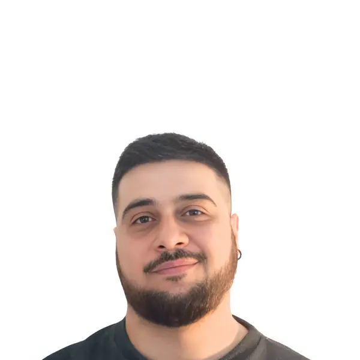

I design the systems games run on — and the stories that make them worth playing.
Technical Game Designer & Unity Developer. Real production code, real shipped features, real narrative craft — same person, every time.

About
Technical Game Designer & Unity Developer. I build games and the systems behind them. C# and Unity are my tools, but my background sits at the intersection of development and design — I've shipped live features, built internal tools, and worked directly with UA and design teams. I care about how a game feels, how it performs, and how it converts. I bridge creative vision with technical execution.
Core Experience
Unity Client Developer
Shipped live features — clan chat, reporting system, A/B-tested functionality, UA tooling — on Golf Battle, a mobile title reaching millions of players, inside a structured Agile pipeline.
Game, Level & Narrative Designer
Took on expanding creative and production responsibility on 7 Sins as the team grew — level design, narrative direction, and art direction across a small multidisciplinary team.
Level Designer & Developer
Unity development and level design for hyper-casual prototypes: Exoplanets, Gas Farmer (winner, Adrenaline Rush Jam), Baby Death.
Solo Developer
Designed, built, and shipped FARO alone, start to finish — first solo proof that the systems and the story could come from the same hands.
Customer Service Representative
Support for Supercell's mobile titles — first contact with the games industry, from the outside looking in.
Projects
Golf Battle
Clan chat with server-side infrastructure, a reporting system, A/B-tested features, and internal UA tooling — live inside a title played by millions.
7 Sins
A narrative-driven survival horror concept. Took over an in-progress project and grew into level design, narrative direction, and art direction as the team expanded.
More on itch.io →Hyper-casual Prototypes
Exoplanets, Gas Farmer (winner, Adrenaline Rush Jam), Baby Death — rapid Unity prototyping for mobile hyper-casual.
More on itch.io →FARO
A 12-level puzzle-platformer structured around kishōtenketsu — story without conflict. Built alone, free on itch.io.
More on itch.io →55HP Unity Mobile Template
Reusable Unity architecture — Service Registry, FSM, Save System, Object Pooling, Addressables, UI architecture — built to accelerate mobile production.
View repo →Let's talk
Open to Technical Game Designer, Level Design, and narrative-adjacent roles — remote-first.